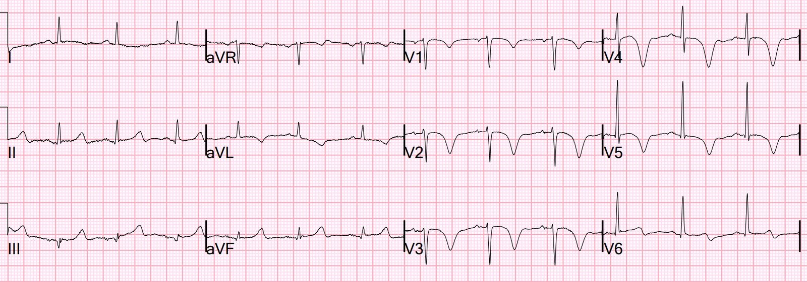
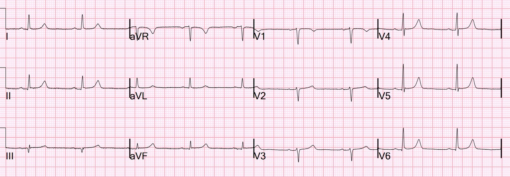
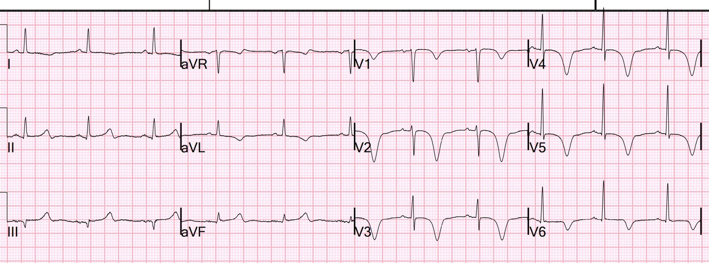
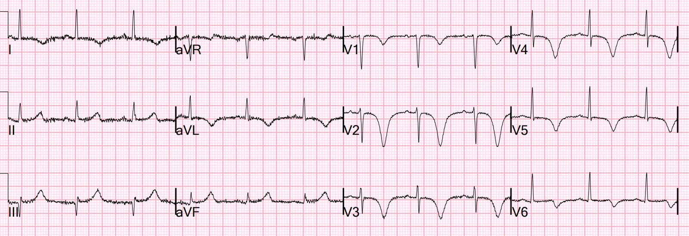
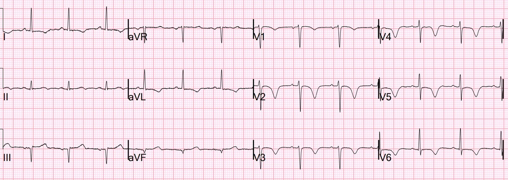
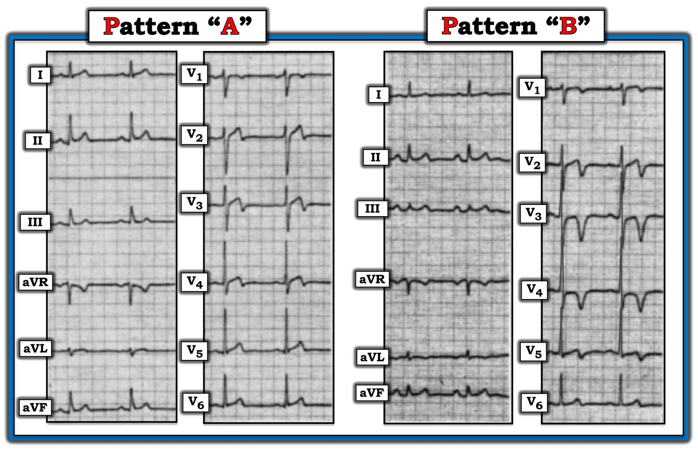
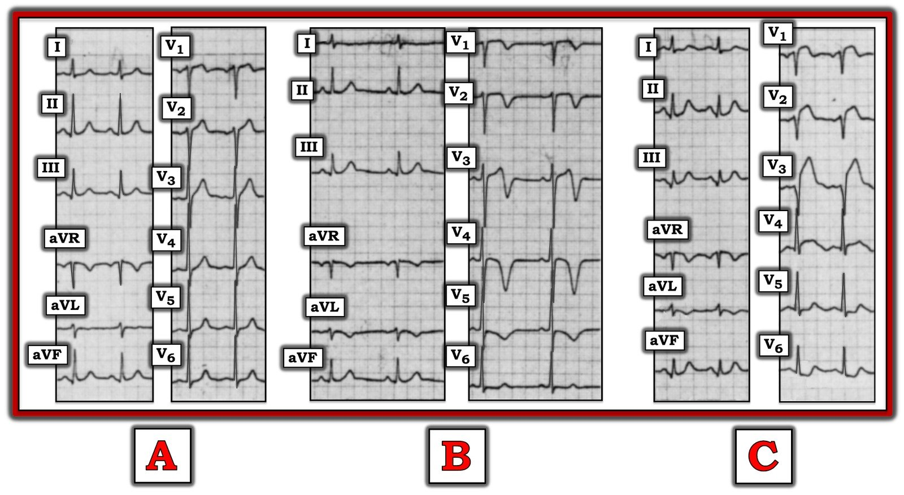

12/08/2022 — ST chênh lên thành dưới và sóng T tối cấp, nhưng bệnh nhân hết đau. Chuyện gì đang xảy ra?
Bản dịch tiếng Việt của bài "Inferior ST Elevation and Hyperacute T-waves, but Patient is Pain Free. What is going on?" – Dr. Smith’s ECG Blog. Giữ nguyên toàn bộ 8 hình ảnh của bản gốc.
Một bệnh nhân nữ 60 mấy tuổi đến viện vì các cơn đau ngực trong 2 ngày trước đó, mỗi cơn kéo dài 20 đến 30 phút. Vào ngày nhập viện, cơn đau kéo dài lâu hơn nhiều và bà đến khoa cấp cứu. Trên xe cứu thương, bà được dùng nitro và hết đau. Khi đến khoa cấp cứu, bà đã hết đau.


Bạn nghĩ gì?
Đây là điện tâm đồ từ 3 năm trước


Đây là hình thái Wellens kiểu B kinh điển, và phù hợp với toàn bộ bệnh cảnh.
Vậy đây là hội chứng Wellens. Điện tâm đồ kinh điển đến mức khi thấy nó trên hệ thống, tôi đã biết đây là hội chứng đầy đủ và ghi rằng “bệnh nhân này hẳn đang hết đau vào lúc này.” Sau đó tôi đã xác nhận điều đó khi xem hồ sơ bệnh án.
Xem phần mô tả quan trọng về hội chứng Wellens bên dưới.
Các bác sĩ khám bệnh nhân lo ngại OMI thành dưới do ST chênh lên (STE) kín đáo ở các chuyển đạo dưới, và ST chênh xuống (STD) ở aVL.
Làm sao chúng ta BIẾT đây không phải OMI thành dưới đang diễn ra?
1. Bệnh nhân hoàn toàn hết đau và 2. STE thành dưới như vậy, và thậm chí cả những sóng T trông có vẻ tối cấp, thường là thay đổi soi gương (reciprocal) của tái tưới máu thành trước và bên cao.
Đây là một ca tương tự:
Bạn giải thích thế nào về các sóng T tối cấp ở thành dưới này?
1 giờ sau:


Sóng T đảo ngược đối xứng ở các chuyển đạo trước tim tiếp tục tiến triển (sâu thêm)
Chụp mạch vành:
Nhồi máu cơ tim cấp – nhồi máu cơ tim không ST chênh lên (Non ST Elevation Myocardial Infarction).
Thủ phạm là chỗ hẹp 90% ở LAD đoạn gần.
Sau PCI:


2 ngày sau


Hội chứng Wellens
Hội chứng Wellens là hội chứng OMI thoáng qua (bao gồm cả STEMI thoáng qua) của LAD, trong đó điện tâm đồ không được ghi vào lúc đang đau thắt ngực, mà chỉ được ghi sau khi cơn đau tự hết, khi đó điện tâm đồ cho thấy sóng T tái tưới máu ở vùng chi phối của LAD. Kiểu A = sóng T đảo ngược ở phần cuối (hai pha); kiểu B cho thấy sóng T đảo ngược sâu, đối xứng. Hội chứng Wellens cũng đòi hỏi sóng R phải được bảo tồn.
Như vậy, trong hội chứng Wellens, bệnh nhân:
1) Hết đau sau một cơn đau thắt ngực,
2) Có hình thái sóng T đảo ngược điển hình (không phải mọi sóng T đảo ngược đều là Wellens!!),
3) Sẽ có sóng R được bảo tồn
4) Sẽ có sự tiến triển của sóng T đảo ngược,
5) Luôn có troponin tăng rồi giảm ở một mức độ nào đó,
6) Sẽ có động mạch ĐÃ THÔNG HOẶC tuần hoàn bàng hệ tốt (cơ tim được tưới máu)
7) Có nguy cơ cao tắc lại (kèm giả bình thường hóa sóng T nếu xảy ra)
Sóng T đảo ngược như vậy cũng xảy ra ở tất cả các vùng chi phối mạch vành khác.
Xem các bài sau về nhiều dạng Wellens và các hình ảnh giả Wellens:
Wellens’ syndrome (25 cases!) (hội chứng Wellens – nhiều ca bệnh)
LVH mimics Wellens (LVH giả Wellens)
Pulmonary Embolism vs. Wellens (thuyên tắc phổi so với Wellens)
PseudoWellens due to Unstable Angina (giả Wellens do đau thắt ngực không ổn định)
Wellens’ with 100% LAD but good collateral circulation (Wellens với LAD tắc hoàn toàn nhưng tuần hoàn bàng hệ tốt)
Wellens’ in inferior or lateral leads (Wellens ở các chuyển đạo dưới hoặc bên)
Posterior Reperfusion T-waves (Wellens’ of the Posterior Wall manifesting large V2 T-waves) (sóng T tái tưới máu thành sau – Wellens của thành sau biểu hiện bằng sóng T lớn)
Wellens’ in Paced Rhythm (Wellens trong nhịp tạo nhịp)
Wellens’ in LBBB (Wellens trong LBBB)
Wellens’ Syndrome – NOT (mimics) (KHÔNG phải hội chứng Wellens – các hình ảnh giả)

===================================
BÌNH LUẬN CỦA TÔI, bởi KEN GRAUER, MD (12/8/2022):
===================================
Hiểu rõ hội chứng Wellens là điều bắt buộc trong cấp cứu. “Vẻ đẹp” của thực thể lâm sàng này có 3 mặt: i) Biết cần tìm gì trong bệnh sử và trên điện tâm đồ cho phép chẩn đoán trong vòng vài giây (như phân tích tức thì của Dr. Smith trong ca hôm nay); ii) Nhận ra hội chứng Wellens cho bạn biết giải phẫu (tức là dự đoán chính xác một tổn thương hẹp mức độ cao ở LAD đoạn gần); và, iii) Nhận ra hội chứng Wellens thúc đẩy nhu cầu thông tim kịp thời và điều trị cứu sống bệnh nhân.
- Ngoài ca hôm nay — chúng tôi đã đăng rất nhiều ví dụ về hội chứng Wellens trên Dr. Smith’s ECG Blog (Xem bài ngày 28 tháng Sáu năm 2018 — và bài ngày 14 tháng Mười Hai năm 2018 — chỉ để nêu 2 ví dụ).
- Đáng tiếc là dù đã có phần bình luận chuyên môn nêu trên của Dr. Smith trong ca hôm nay — hội chứng Wellens vẫn là một chẩn đoán bị hiểu sai bởi quá nhiều nhân viên y tế.
Lịch sử của hội chứng Wellens:
Thật khó tin rằng bài báo gốc mô tả hội chứng Wellens đã được công bố cách đây 40 năm! Khi suy ngẫm về ca hôm nay — tôi nghĩ sẽ rất bổ ích nếu quay lại với bài báo gốc này (de Zwaan, Bär & Wellens: Am Heart J 103: 7030-736, 1982):
- Các tác giả (de Zwaan, Bär & Wellens) — đã nghiên cứu 145 bệnh nhân liên tiếp (tuổi trung bình 58) nhập viện vì đau ngực, được cho là sắp bị nhồi máu cấp (Bệnh nhân có LBBB, RBBB, LVH hoặc RVH bị loại trừ). Trong nhóm này — 26/145 bệnh nhân đã có sẵn, hoặc xuất hiện trong vòng 24 giờ sau nhập viện, một hình ảnh sóng ST-T bất thường ở các chuyển đạo ngực phía trước mà không có thay đổi ở phức bộ QRS.
- Tôi đã tái hiện (và điều chỉnh) trong Hình 1 — các hình mẫu của 2 hình ảnh điện tâm đồ thấy ở 26 bệnh nhân này. Đáng chú ý — tất cả 26 bệnh nhân đều biểu hiện thay đổi sóng ST-T đặc trưng ở chuyển đạo V2 và V3.
- Hầu hết bệnh nhân cũng có thay đổi đặc trưng ở chuyển đạo V4.
- Hầu hết bệnh nhân có một số thay đổi sóng ST-T (nhưng ít hơn) ở chuyển đạo V1.
- Ở một số ít bệnh nhân — sóng ST-T bất thường còn được thấy lan về phía bên tới tận chuyển đạo V5 và/hoặc V6.
- Một nửa trong số 26 bệnh nhân biểu hiện thay đổi sóng ST-T đặc trưng ngay lúc nhập viện. 13/26 bệnh nhân còn lại xuất hiện các thay đổi này trong vòng 24 giờ sau nhập viện.
- Các dấu ấn huyết thanh của nhồi máu (tức là CPK, SGOT, SLDH) hoặc bình thường hoặc chỉ tăng không quá mức tối thiểu.
Các hình ảnh điện tâm đồ của hội chứng Wellens:
2 hình ảnh điện tâm đồ quan sát được ở 26 bệnh nhân có thay đổi sóng ST-T đặc trưng được trình bày trong Hình 1:
- Kiểu A — ít gặp hơn nhiều trong nhóm nghiên cứu (tức là gặp ở 4/26 bệnh nhân). Đặc điểm là đoạn khởi đầu ST đẳng điện hoặc chênh lên tối thiểu, với đoạn ST thẳng hoặc dạng vòm (tức là cấu hình “mặt mếu”), tiếp theo là sóng T đi xuống dốc từ đỉnh cho đến khi kết thúc bằng sóng T đảo ngược đối xứng ở phần cuối.
- Kiểu B — phổ biến hơn nhiều (tức là gặp ở 22/26 bệnh nhân). Đặc điểm là đoạn ST dạng vòm, về cơ bản không chênh lên — kết thúc bằng sóng T đảo ngược đối xứng, thường sâu một cách đáng ngạc nhiên.


Sự tiến triển sóng ST-T trong hội chứng Wellens:
Tôi đã tái hiện (và điều chỉnh) trong Hình 2 — các điện tâm đồ liên tiếp tiêu biểu thu được từ một trong các bệnh nhân trong bài báo gốc năm 1982.
- Bệnh nhân có các điện tâm đồ trình bày trong Hình 2 — là một người đàn ông 45 tuổi đến viện vì đau ngực kéo dài liên tục trong vài tuần trước khi nhập viện. Điện tâm đồ ban đầu của ông được trình bày ở Ô A — và không có gì đáng chú ý, với tăng tiến sóng R bình thường. Các chất chỉ điểm huyết thanh âm tính với nhồi máu. Điều trị nội khoa bằng thuốc chẹn ß và nitrat làm hết mọi triệu chứng.
- Ô B — được ghi 23 giờ sau khi nhập viện, lúc bệnh nhân hoàn toàn không có triệu chứng. Điện tâm đồ thứ 2 này cho thấy các thay đổi ST-T đặc trưng tương tự như những thay đổi được trình bày cho Kiểu B trong Hình 1 (tức là sóng T đảo ngược sâu, đối xứng ở nhiều chuyển đạo ngực — với nhánh xuống của sóng T dốc đứng, đặc biệt rõ ở chuyển đạo V3).
- Không được trình bày trong Hình 2 là các điện tâm đồ tiếp theo ghi trong 3 ngày sau đó — cho thấy sự trở lại hình ảnh “bình thường” của điện tâm đồ ban đầu (đã được trình bày ở Ô A của Hình 2) ở bệnh nhân này. Trong thời gian này — bệnh nhân vẫn không có triệu chứng và tăng dần mức độ hoạt động.
- Ô C — được ghi ~5 ngày sau, vì bệnh nhân lên một cơn đau ngực dữ dội mới. Như có thể thấy — có mất lực khử cực hướng ra trước (QS sâu ở chuyển đạo V3) kèm ST chênh lên thành trước rõ rệt, phù hợp với STEMI diện rộng. Đáng tiếc — bệnh nhân này đã tử vong do sốc tim trong vòng 12 giờ sau khi ghi bản ghi này. Khám nghiệm tử thi cho thấy nhồi máu cơ tim trước vách diện rộng với tắc hoàn toàn mạch vành do cục máu đông mới tại chỗ chia đôi giữa thân chung động mạch vành trái (LMain) và LAD đoạn gần.


Các phát hiện có liên quan từ bài báo năm 1982:
Hình ảnh điện tâm đồ được gọi là hội chứng Wellens đã được mô tả cách đây 40 năm. Các phát hiện lâm sàng rút ra từ bản thảo gốc năm 1982 của de Zwaan, Bär & Wellens đến nay vẫn còn nguyên giá trị.
- Một trong 2 hình ảnh điện tâm đồ trình bày trong Hình 1, với các bất thường ST-T đặc trưng ở các chuyển đạo ngực thành trước — được ghi nhận ở 18% trong số 145 bệnh nhân nhập viện vì đau ngực do tim mới xuất hiện hoặc nặng lên.
- Có thể thấy những biến thể về hình dạng của 2 hình ảnh điện tâm đồ này ở các bệnh nhân nhập viện vì đau ngực nói trên. Các điện tâm đồ liên tiếp không cho thấy thay đổi hình dạng QRS (tức là không xuất hiện sóng Q hay phức bộ QS). Các chất chỉ điểm huyết thanh của nhồi máu vẫn bình thường, hoặc chỉ tăng không quá mức tối thiểu.
- Trong phân nhóm bệnh nhân của bản thảo năm 1982 này không được phẫu thuật bắc cầu — 75% (12/16 bệnh nhân) đã tiến triển thành STEMI thành trước diện rộng do tắc LAD đoạn gần trong vòng 1-2 tuần sau khi hết đau.
BÀI HỌC cần rút ra:
Vào thời điểm bản thảo năm 1982 được viết — các tác giả còn chưa chắc chắn về cơ chế gây ra 2 hình ảnh điện tâm đồ của hội chứng Wellens.
- Giờ đây chúng ta đã biết cơ chế. Một tỷ lệ cao bệnh nhân đến khoa cấp cứu vì đau ngực do tim mới xuất hiện rồi sau đó hết — và ngay sau đó xuất hiện một dạng nào đó của các hình ảnh điện tâm đồ trình bày trong Hình 1 — đã bị tắc mạch vành gần đây ở LAD đoạn gần — rồi sau đó tái thông tự phát.
- Lý do sóng Q không xuất hiện trên điện tâm đồ và các chất chỉ điểm huyết thanh của nhồi máu bình thường (hoặc cùng lắm chỉ tăng không quá mức tối thiểu) — là vì thời gian tắc mạch vành rất ngắn. Tổn thương cơ tim là tối thiểu (nếu có tổn thương nào).
- Cái gì tự phát tắc — rồi tự phát tái thông — có thể tiếp tục tắc lại, rồi lại tái thông — cho đến khi cuối cùng đạt tới một trạng thái sau cùng (tức là mạch “thủ phạm” hoặc vẫn mở, hoặc bị đóng).
- Như phần bàn luận ở trên của Dr. Smith — chúng ta có thể biết động mạch “thủ phạm” đang mở hay đóng bằng cách đối chiếu các điện tâm đồ liên tiếp với bệnh sử đau ngực của bệnh nhân. Ví dụ, trong ca hôm nay — phát hiện sóng T đảo ngược sâu, đối xứng ở hầu như tất cả các chuyển đạo ngực đi kèm với việc hết đau ngực đã ngay lập tức cho Dr. Smith biết rằng LAD đã tái thông tự phát.
- Tầm quan trọng của việc nhận ra hội chứng Wellens — là nó cho chúng ta biết rằng thông tim kịp thời sẽ là điều thiết yếu NẾU chúng ta muốn ngăn ngừa tắc lại. Trong nghiên cứu của de Zwaan, Bär & Wellens — 75% số bệnh nhân không đau này có thay đổi ST-T kiểu Wellens đã tiến triển thành STEMI thành trước diện rộng trong 1-2 tuần tiếp theo nếu không được điều trị.
- Do đó, mục tiêu của việc nhận ra hội chứng Wellens — là can thiệp trước khi xảy ra tổn thương cơ tim đáng kể (tức là tiêu chuẩn chẩn đoán của hội chứng này đòi hỏi sóng Q hay phức bộ QS ở thành trước chưa xuất hiện — và các chất chỉ điểm huyết thanh của nhồi máu tăng không quá mức tối thiểu).
- Đó không phải là “hội chứng Wellens” — NẾU bệnh nhân đang đau ngực vào thời điểm thấy các hình ảnh điện tâm đồ trong Hình 1. Đau ngực đang diễn ra gợi ý rằng động mạch “thủ phạm” đã tắc lại.
- Bị loại trừ khỏi nghiên cứu năm 1982 là các bệnh nhân có LBBB, RBBB, LVH hoặc RVH. Mặc dù tắc cấp LAD đoạn gần tất nhiên có thể xảy ra ở bệnh nhân có rối loạn dẫn truyền hay lớn buồng tim — việc nhận ra các hình ảnh của hội chứng Wellens khó khăn hơn nhiều khi có bất kỳ dấu hiệu điện tâm đồ nào trong số này.
- Cuối cùng — cần nói đôi lời về các hình ảnh điện tâm đồ của hội chứng Wellens trình bày trong Hình 1. Kiểu A — ít gặp hơn nhiều, nhưng đặc hiệu hơn cho hội chứng Wellens NẾU đi kèm bệnh sử “phù hợp” (tức là đã có đau ngực trước đó — và nay đã hết vào thời điểm xuất hiện các bất thường ST-T).
- Khác với ví dụ trong Hình 1 — Kiểu B có thể chỉ giới hạn ở sóng T đảo ngược đối xứng mà không có nhánh xuống dốc đứng của sóng T đi vào phần âm tận cùng ở bất kỳ chuyển đạo nào. Đây là hình ảnh thấy trong ca hôm nay — mà với bệnh sử như vậy, đã được Dr. Smith chẩn đoán ngay là hội chứng Wellens.
Kết luận — 145 bệnh nhân được de Zwaan, Bär & Wellens nghiên cứu năm 1982 vẫn tiếp tục mang lại hiểu biết lâm sàng về bản chất của hội chứng Wellens khoảng 40 năm sau khi bản thảo này được viết.
- T.B. (P.S.): Và đôi khi — có thể có một diễn tiến tương tự của các dấu hiệu điện tâm đồ chỉ điểm tắc cấp và tái tưới máu tự phát (tương ứng với các thay đổi về mức độ đau ngực) không chỉ ở các chuyển đạo thành trước — mà còn ở các chuyển đạo thành dưới. Theo Dr. Smith trong ca hôm nay — đây không phải là OMI thành dưới cấp đang diễn ra — mà là “phần soi gương” của quá trình tiến triển hội chứng Wellens.